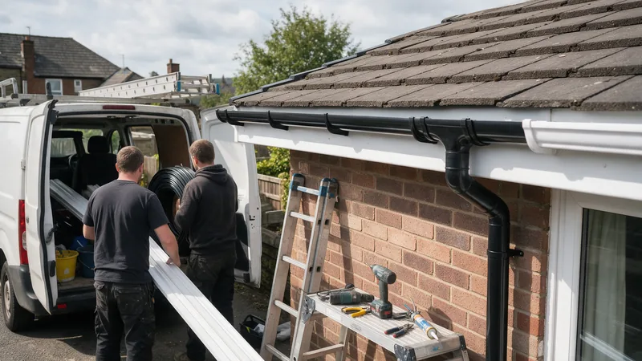

About
A firm that does not exist.
Eavesdale Roofline is invented. There is no van, no ladder rack and nobody to ring. It is a demo built by Clockwork AI to show a real gutters, fascias and roofline firm what a site looks like when everything on it is written properly. The story below is made up, and so is everybody in it.
The made up version
Three of us, a van and a tower. Two on the boards, one measuring, quoting and talking to people about why their gutter only goes over in heavy rain. The name came off the word for the bit of a roof that overhangs the wall, which seemed about right for a firm that spends its whole life at that line.
Most of the work arrives as somebody who has already had a quote for a full roofline when what they needed was a clean and a seal. So the way this made up firm works is built round the opposite of that: say repair out loud when a repair will do, take the old board off rather than capping over it, and put the access on the quote as its own line so people can see what they are actually paying for.
How we would like to be judged
By whether the water goes where it should the next time it rains hard, and by whether we told you the truth about your timber. Clipping new white board on is the straightforward part of this trade and plenty of people do it neatly. Working out why a run has been going over for three years, and saying when the answer is cheap, is the part that decides whether anybody rings you again.
The other half of it is not going up when we should not. Nobody is going on a ladder in a gale for a gutter, and nobody is standing on a conservatory roof to save putting a tower up. That costs us the odd job and we would rather lose it.
What we will tell you no about
The roof itself, which is a roofer's trade: tiles, slates, ridges, flashing, chimneys and flat roof coverings. Capping over timber that has gone. Ladder work in weather that makes it daft. And boarding over a soffit without ventilation to save a bit, because that swaps a rotten fascia for condensation in your loft.

Generated photoGenerated for this demo. Nobody in it is a real person and the van carries no name.
The three of us
Invented people.
Rob
Twenty odd years on the boards. The one who takes a screwdriver up the ladder on every visit and will tell you your timber is fine when it is fine, which loses us work and keeps people ringing back.
Sam
Gables, bargeboards and anything where the access is the hard part. Puts the tower up rather than reaching, every time, even when it adds an hour.
Elle
Measures, quotes and answers the phone. Asks whether it goes over all the time or only in a downpour, which usually settles what the job is before anybody leaves the yard.
Made up for this demo. None of these people exist.
About this demo
What you are actually looking at.
Everything is fictional
The firm, the people, the jobs, the reviews and the pictures. The phone number is from the range Ofcom keeps for television and film, so it rings nobody, and the email address ends in .example, which cannot receive anything.
No prices and no claims
On purpose. There are no prices on this site, nothing claimed about schemes, approvals or guarantees, and nothing about how long the firm has been going, because inventing any of that on a demo would be making things up about a firm that does not exist.
Nothing is sent or saved
The booking form and the chat both run entirely in your browser. They check what you type, show you a confirmation and then forget it. No server, nothing stored, nobody called.
Want the same thing for a real firm? The Clockwork number is in the bar at the top of every page.
Seen enough of the demo?
Have a look at the work, the advice or the booking form. Or ring Clockwork on the number in the bar at the top.